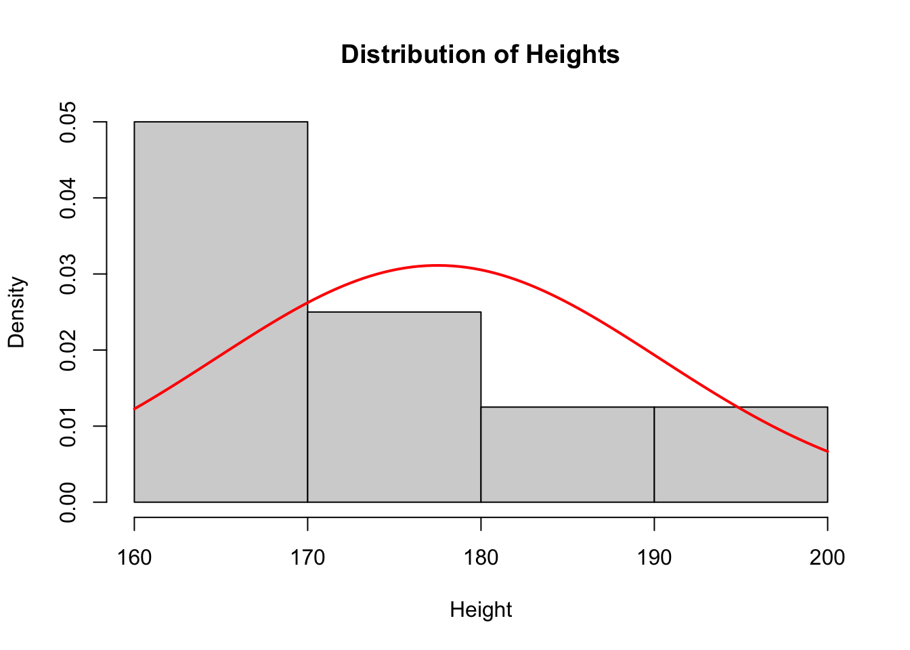

heights <- c(160, 170, 170, 170, 180, 180, 190, 200)
median(heights)[1] 175mean(heights)[1] 177.5heights <- c(160, 170, 170, 170, 180, 180, 190, 200)
median(heights)[1] 175mean(heights)[1] 177.5mode in R returns the objects type. To get the statistical mode with base R you need to write a function for mode
stat_mode <- function(x){
tab <- table(x)
mode_cha <- names(tab)[tab == max(tab)]# annoying it returns a character
mode <- as.numeric(mode_cha)
return(mode)
}
stat_mode(heights)[1] 170range(heights)[1] 160 200max(heights) - min(heights)[1] 40var(heights)[1] 164.2857sqrt(var(heights))[1] 12.8174sd(heights)[1] 12.8174range(), var(), and sd() summarize the data with individual numbers. A distribution shows the whole pattern of the data. For height, most people are near the average, while very short and very tall people are less common. So a probability distribution describes which values a variable (height) can be and how common or likely those values are.
hist(heights, probability = TRUE,
main = "Distribution of Heights",
xlab = "Height")
curve(dnorm(x, mean = mean(heights), sd = sd(heights)),
add = TRUE,
col = "red",
lwd = 2)
Taller bars represent more common ranges of height. The red curve is an idealised normal distribution with the same mean and standard deviation as our data. Note density: estimated probability per unit on the x-axis. For more on probability density functions (PDF) and kernel density estimation see: The chemical statistician
You can already see from the summary statistics averages (mean, median, and mode) and more clearly from the plot that sample of heights are not normally distributed. In a truly normal distribution the mean = median = mode. In practice they are close together. Here there are only 8 observations: with a small sample, there is a greater chance of getting an unrepresentative picture of the population because of random variation.